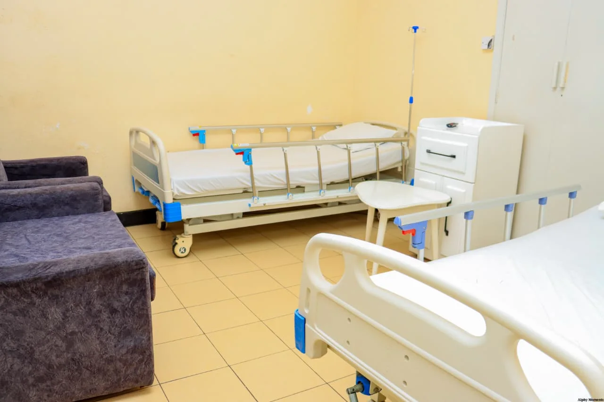
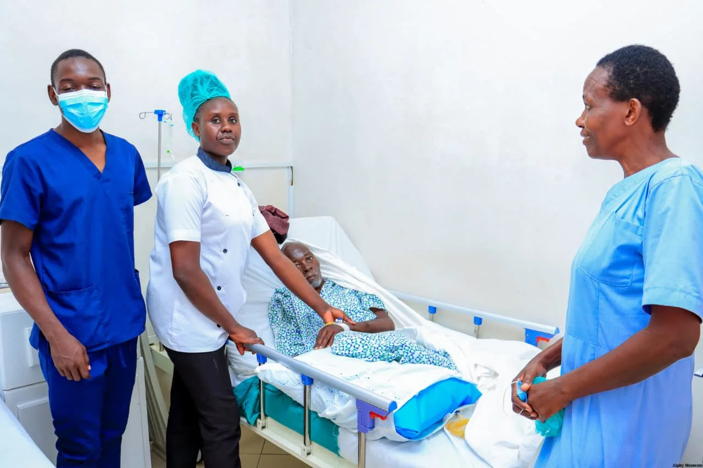
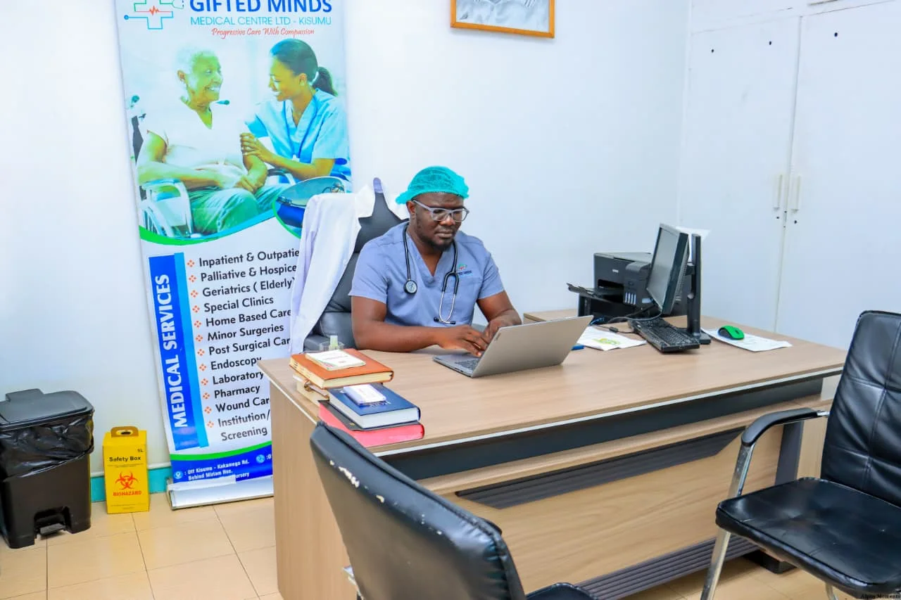
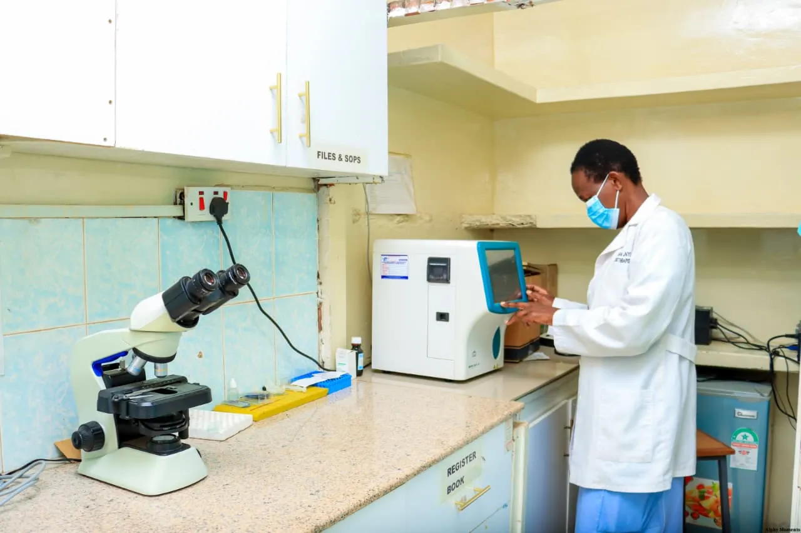
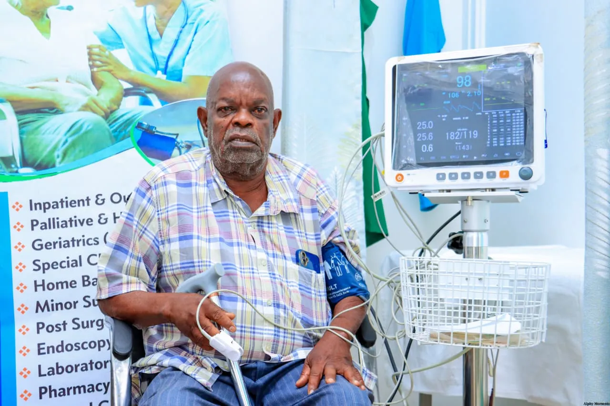

Facility overview
The facility
The facility profile describes a purpose-built complex with areas for consultation, treatment, diagnostics and inpatient observation.
Contact the centre
Inpatient wardRooms and equipment
Rooms and care spaces
Photographs of the ward, laboratory, care room and exterior are shown below. Room and equipment information follows the facility profile.






Facility capacity
Rooms and capacity
The facility profile lists rooms and services for triage, consultation, treatment, pharmacy and inpatient care.
- Reception and patient waiting area
- Pharmacy and registered Class C laboratory
- Treatment room and minor theatre
- Observation and short-stay ward
- Maternal and Child Health clinic
- Physiotherapy department
- Emergency and first aid room
- Health records and information system office
- Sluice room
Equipment
Equipment listed in the facility profile
Equipment named in the facility profile includes patient monitors, haematology and biochemistry analysers, an Olympus microscope, an autoclave, an EEG machine, oxygen equipment, physiotherapy equipment and an emergency resuscitation trolley.
Call the centre to confirm current services and facility information.
Contact the centre